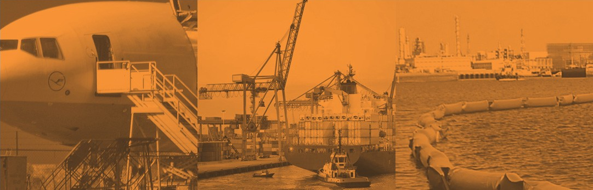
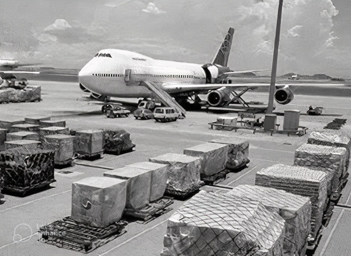
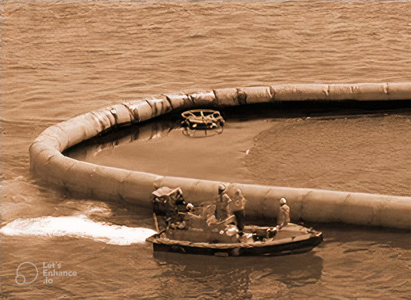
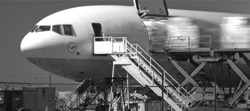
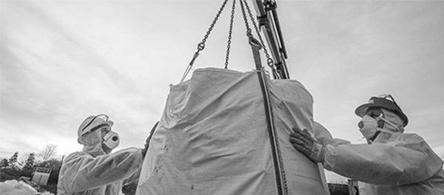
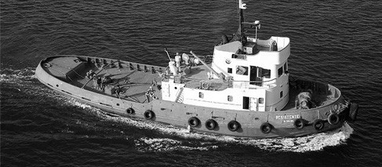

SOBRE O GRUPO ARENNA:
O GRUPO é composto por duas empresas que uniram suas forças no mercado para atender a crescente demanda por serviços de excelência na área logística, com equipe experiente com soluções adequadas a sua necessidade. Nosso grupo é especializado em apoio a navegação, liberação de peças no território nacional e proteção ambiental através de barreiras de contenção.
CONHEÇA NOSSO GRUPO:
Especializada nos serviços de liberação de peças (conhecido como SPARE PARTS) e apoio à navegação com transbordo e assistência a entrada e saída de marítimos nos portos e aeroportos do Brasil, atuando na remoção de resíduos sólidos, documentação em geral, coleta e entrega de bagagens extraviadas.
Especializada em serviços na área ambiental com barreiras de contenção para cercos preventivos. Atua também, na armazenagem de cargas em zona primária no Porto de Santos, barcaças para atendimento à navios, retirada de material de peação em bordo e projetos logísticos.
NOSSOS SERVIÇOS:
Operamos com uma combinação de câmeras de segurança instaladas em todo o navio, central de monitoramento a bordo com 2 monitores e com o suporte de um Centro de Comando Operacional Remoto, monitorando cada parte do navio durante vinte e quatro horas.
MONITORAMENTO
SPARE PARTS
Serviço de liberação e transportes de peças vindas do exterior para atender e/ou substituir em navios atracados em todos os portos brasileiros, sem ter a necessidade de nacionalização da carga, com atendimento rápido e eficiente.
Apoio a navegação oferecendo serviço de troca de marítimos, embarque, desembarque e liberação junto as Autoridades nos portos e aeroportos do Brasil.
APOIO À NAVEGAÇÃO
REMOÇÃO DE RESÍDUOS
Disponibilizamos de toda uma logística para retirada de resíduos sólidos e líquidos (taifa e sludge) de pequenas e grandes embarcações em navios fundeados ou atracados.
Retirada e entrega de material de peação à bordo utilizado em fixação de cargas nos porões e/ou conveses das embarcações, a fim de que a mesma não se danifique pelo balanço das águas do mar.
MATERIAL DE PEAÇÃO
BARCAÇAS PARA ATENDIMENTOS
Locação de embarcações para atendimento e apoio de navios atracados no Porto de Santos, seja nas margens Direita, Esquerda e Cubatão.
Oferecemos barreiras de conteção para o combate e contenção dos derramamentos de óleos e produtos químicos imiscíveis na superfície da água. Esses procedimentos chamados de cercos preventivos, devem estar em conformidade com as normas da Autoridade Marítima para tráfego e permanência de embarcações em águas Jurisdicionais Brasileiras.
CERCOS PREVENTIVOS
INSPEÇÃO SUBAQUÁTICA
Dispomos de ROVs totalmente equipados para realizar inspeções subaquáticas, captando imagens de alta qualidade, proporcionando toda a segurança necessária para a viagem.